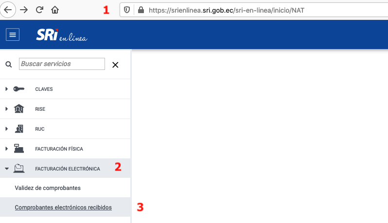
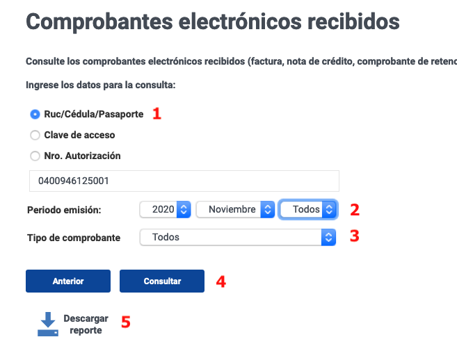
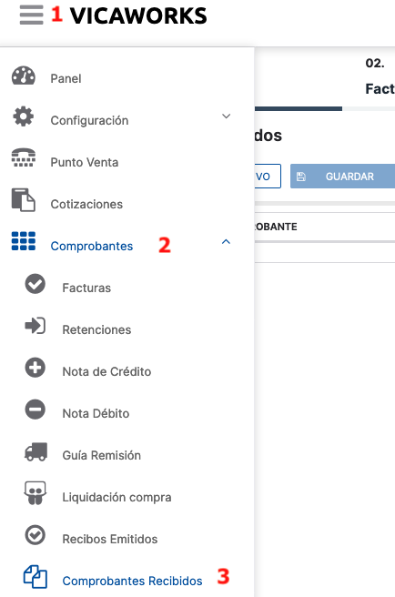
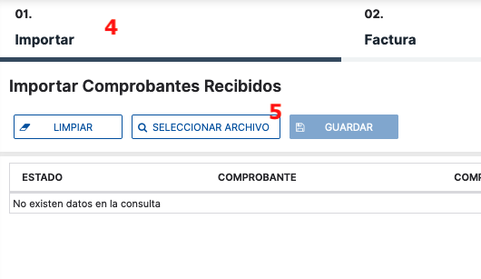
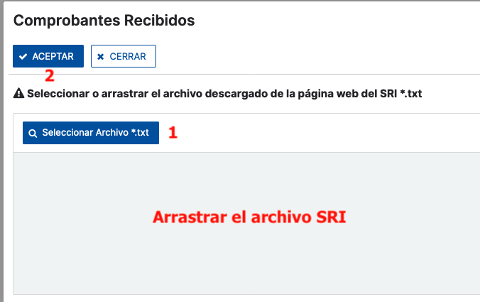
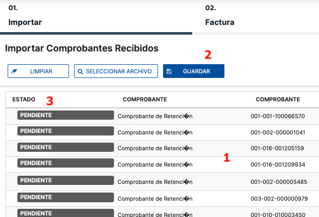
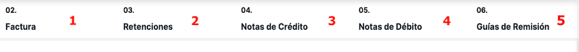

1.
Ingresar al portal del SRI opción servicios en líneas / FACTURACIÓN ELECTRÓNICA / Comprobantes electrónicos recibidos [Link]

2.
Seleccionar el periodo, y el tipo de comprobante, puede seleccionar todos los tipos de comprobantes, y descargar la consulta de datos.

3.
En el sistema mako®, ingresar a la opción MENU / Comprobantes / Comprobantes recibidos, a la opción 01. Importar / SELECCIONAR ARCHIVO.


4.
Seleccione o arrastre, el archivo descargado del SRI, y luego la opción Aceptar

5.
En la pantalla, desplegará todos los comprobantes contenidos en el archivo del SRI, seleccione la opción Guardar y el sistema empesará a importar los comprobantes.
Importante: Al terminar la importación de los comprobantes, en la columna estado despliga si el comprobante fue importado correctamente, o existió algún error.

6.
Para consultar la información de los comprobantes importados, puede seleccionar el tipo de comprobante electrónico en las opciones de la cabecera.
